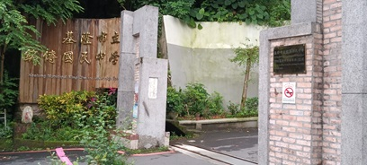
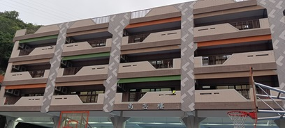
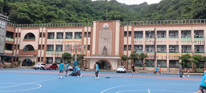
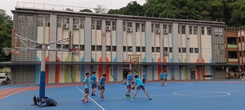

 |
校門口: 坐車學生的必經之路，也是最古老的校門口(校門口一直都在這裡噢)。 |
 |
尚智樓: 這棟樓是七、八年級的校舍，有七、八年級的導師辦公室、新專任辦公室及學務處等等。 |
 |
行政大樓: 這棟樓是九年級的校舍，有舊專任、教務處、總務處、輔導室、校長室與我們最喜歡的圖書館......。 |
 |
禮堂: 這學期才落成的新禮堂、裡面可以打球、開朝會或周會，以及舉辦英語歌唱比賽的地方，有時候會看到籃球隊在那裏訓練。 |